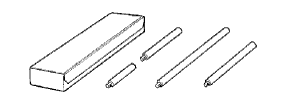

ベーン ポンプASSY（4WD） 準備品 【組み付け】
 | 09905-00012 | スナップリングNo.１ エクスパンダー |
 | 09950-60010 | リプレーサーセット |
 | (09951-00280) | リプレーサー 28 |
|  | 09950-70010 | ハンドルセット |
 | (09951-07100) | ハンドル 100 |
| 09011-12271 | ソケットレンチ（27mm） |
 | QL-100N | QLトルクレンチ（100N) (株)バンザイ·(株)イヤサカ扱い |
| QL-25N | QLトルクレンチ（25N) (株)バンザイ·(株)イヤサカ扱い |
| QL-50N | QLトルクレンチ（50N) (株)バンザイ·(株)イヤサカ扱い |
 | SF1.5N | F型トルクレンチ(1.5N·m） (株)バンザイ·(株)イヤサカ扱い |
| トヨタ純正 ＭＰグリースNo.２ | ||
| トヨタ純正 パワーステアリング フルード | ||
| 保護テープ | ||
| ボルト (Ｍ10×Ｐ1.25首下長さ50mm) 91111-51050 |